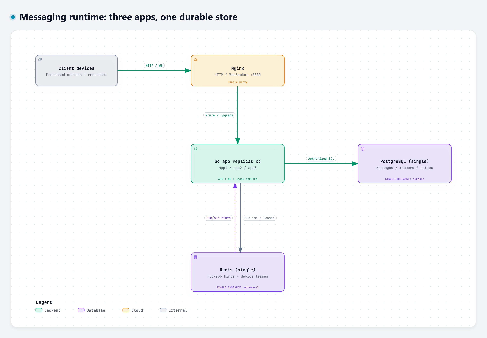

Three Go application processes share one PostgreSQL instance and one Redis instance. PostgreSQL commit is the durability boundary; client cursors and periodic history recovery repair missed live notifications.
Identical replicas are grouped in one box. Each owns its publisher, Redis listener, four feed workers and reconciliation timer. PostgreSQL, Redis, Nginx and the Docker host remain shared failure points.

Commit precedes acknowledgement. A publisher inside any app claims the outbox, publishes a conversation hint, then marks publication. Recipient delivery reads committed PostgreSQL state.
The client reconnects through Nginx with jitter, resumes its processed cursor, and merges HTTP history with live events. Server reconciliation and client polling independently repair missed hints.
Regeneration and review notes · Current validation receipts · Reviewed source hashes · Export hashes
Native Archify JSON and standalone HTML; no Mermaid embedding. Interaction order is illustrative, not measured latency. Source semantics were reviewed against local working files; no Git-pinned source verification is claimed. These diagrams do not establish load capacity or database/cache high availability.